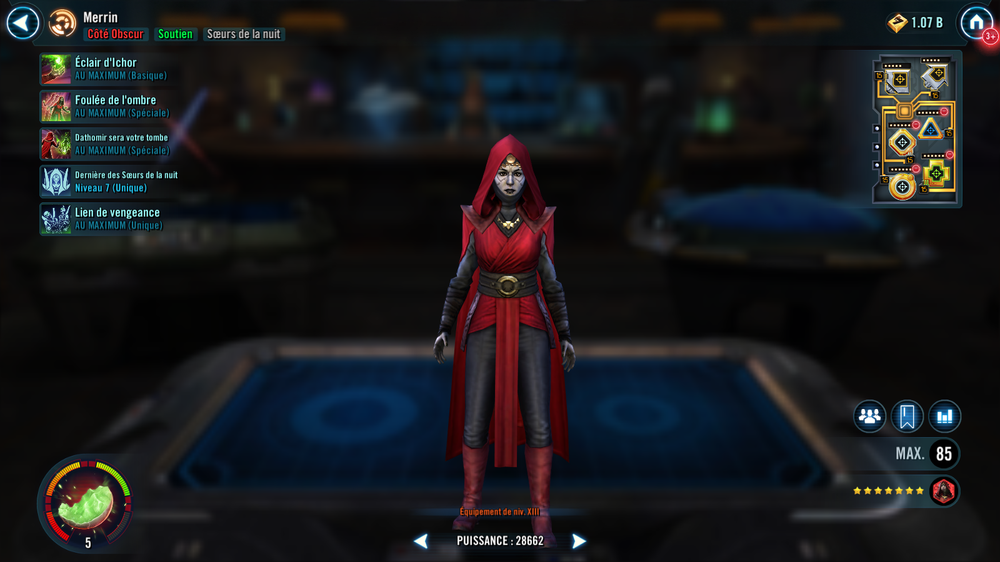
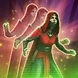

Merrin
A Nightsister witch who proactively defends her allies and inflicts enemies with Plague
A Nightsister witch who proactively defends her allies and inflicts enemies with Plague

Deal Special damage to target enemy and inflict 2 stacks of Plague for 3 turns.

Inflict 2 stacks of Plague on all enemies for 3 turns and all Nightsister allies recover 10% Health and Protection. Merrin dispels all buffs and debuffs on herself and gains Magick Stealth. The next time another ally is inflicted with a debuff or defeated, Merrin loses Magick Stealth, dispels all debuffs on all allies, and revives a random Nightsister ally with 50% Health.
Magick Stealth: Can't be targeted, defeated, damaged, or gain Turn Meter; immune to buffs, debuffs, and taunt effects; if no allies are present, lose Magick Stealth
Deal Special damage to target enemy and Stun them for 1 turn. If this attack defeats an enemy, inflict 4 stacks of Plague on all enemies for 3 turns. Dispel buffs on each enemy with 2 or more stacks of Plague on them.
The first time a Nightsister ally is defeated each encounter, Merrin gains 100% Turn Meter, which can't be prevented. Whenever a Nightsister ally is defeated or revived, Merrin gains 15% (+2% per Relic Amplifier level of the defeated or revived character) Turn Meter, which can't be prevented.
While Merrin has allies, her Speed is set to 0 and she is immune to Turn Meter manipulation.
Omicron Boost : While in Grand Arenas and there are no Galactic Legends: Whenever a Nightsister ally is defeated or revived, Merrin gains 100% Turn Meter, which can't be prevented. At the start of Merrin's turn, inflict all enemies with 1 stack of Plague for 3 turns.
Whenever an ally is inflicted with a debuff, if Merrin has 0% Turn Meter, dispel all debuffs from that ally and Merrin gains 25% Turn Meter, which can't be prevented. If Merrin has more than 0% Turn Meter, she gains 10% Turn Meter instead, which can't be prevented.
Whenever an enemy is damaged, all Nightsister allies recover 5% Protection.
Whenever a Nightsister ally is revived, grant all allies Instant Defeat Immunity for 2 turns, which can't be copied, dispelled, or prevented, and there is a 20% chance (+10% per Relic Amplifier level, max 100% total) to inflict all enemies with 1 stack of Plague for 3 turns at the end of the turn.